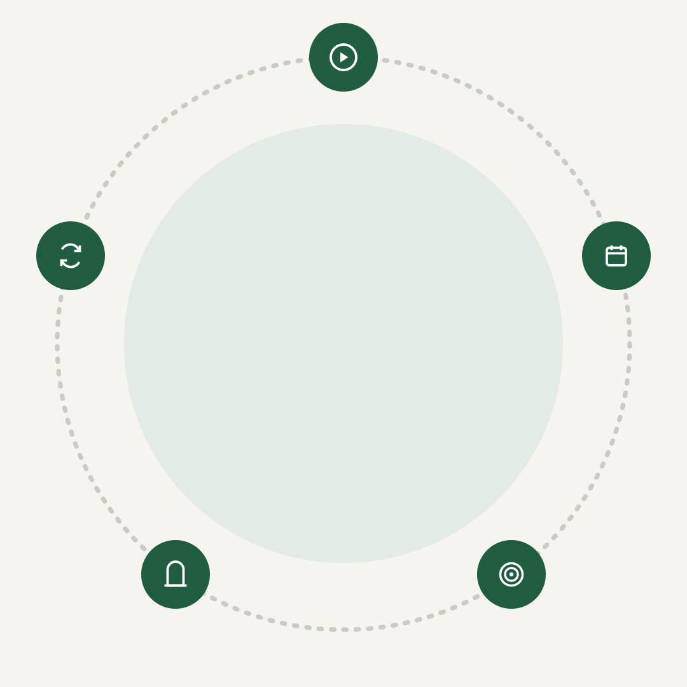
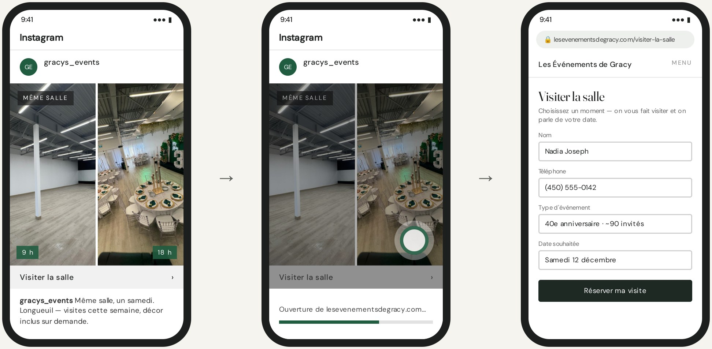
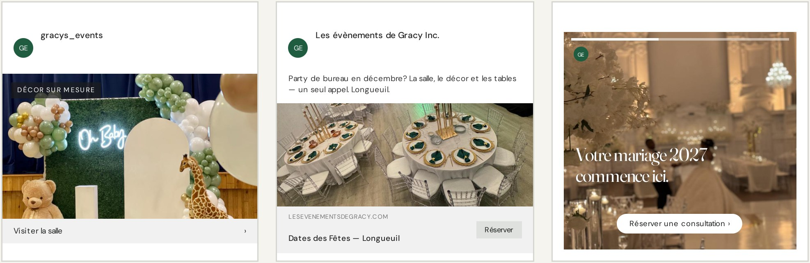
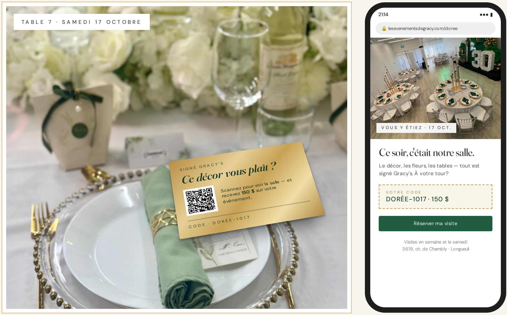
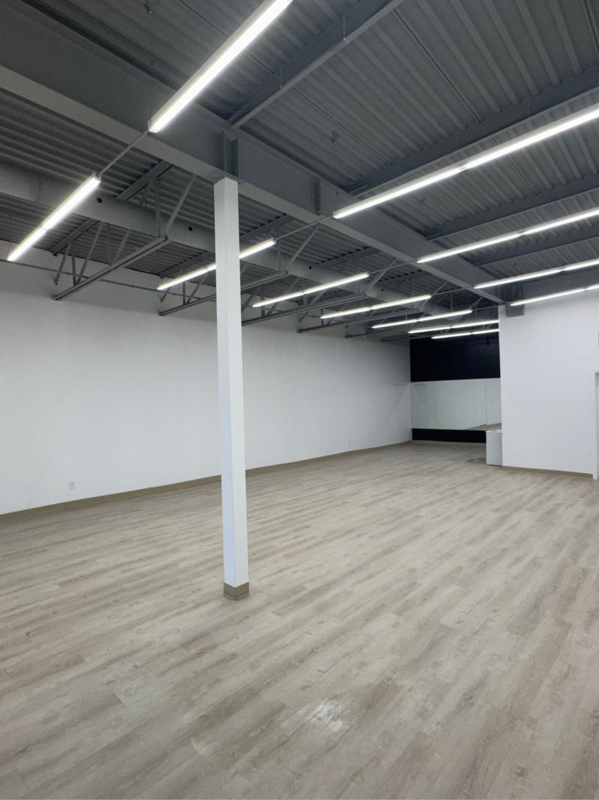
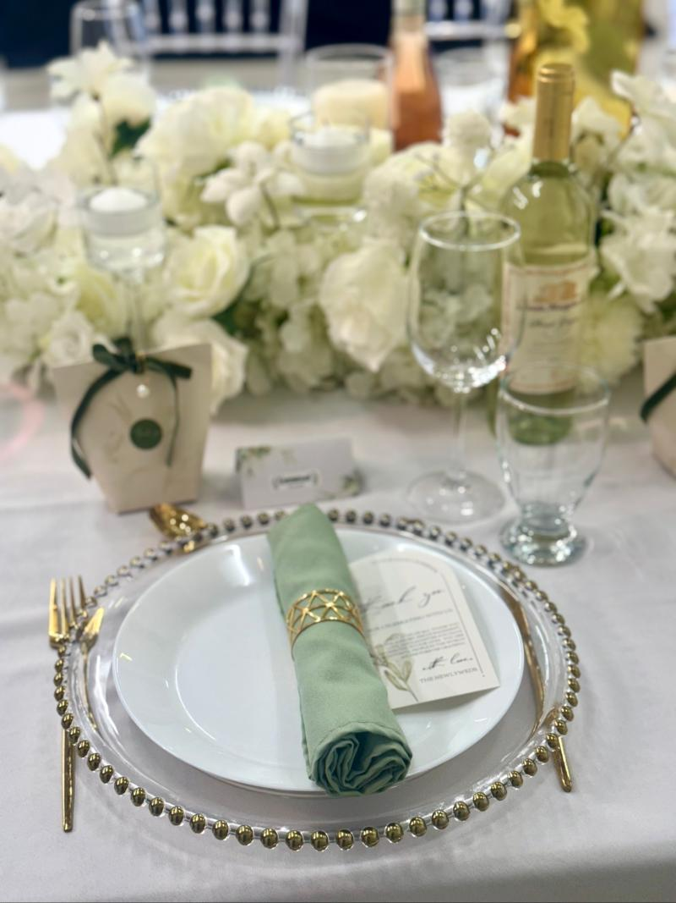
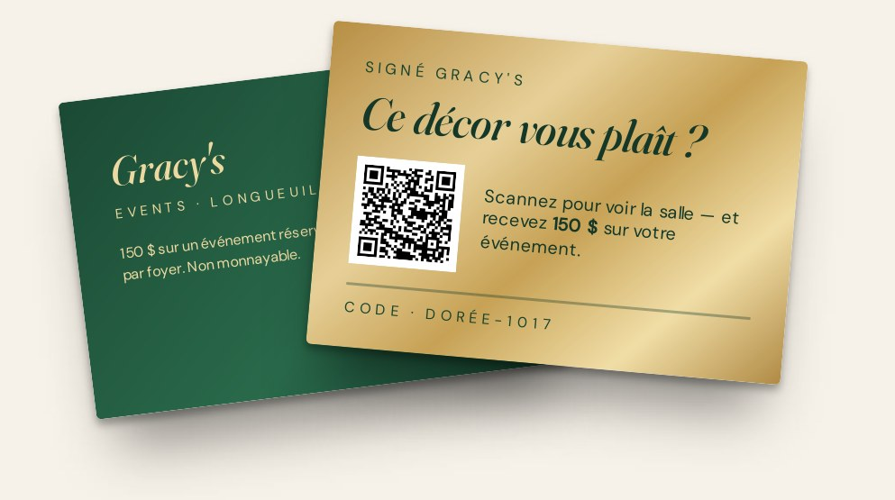

TGS Visuals / Productions
Longueuil · Rive-Sud
Une proposition préparée pour
Les Événements de Gracy
DÉCORATION D'ÉVÉNEMENTS & LOCATION DE SALLE — LONGUEUIL · RIVE-SUD · MONTRÉAL
Stratégie de croissance
Sept ans d’événements dont on parle encore — et maintenant, une salle bien à vous sur la Rive-Sud. Un plan pour faire entrer les gens dans cette salle avant même qu’ils appellent, et en faire des dates réservées chaque semaine.

Septembre 2026
Mandat oct. – déc.
TGS · 111 Chabanel Ouest, Montréal
L’occasion
Gracy's × TGS
Quatre murs blancs.
Chaque samedi, une autre salle.
Fondée en juin 2019 à Montréal par Ann-Chloe Francillon, Fadhili Niyo et Kessiah-Evena Francillon, l’entreprise est devenue, de bouche à oreille, une référence en décor — mariages, galas, showers, baptêmes.
Aujourd’hui, elle a sa propre salle à Longueuil, et 12 000 personnes suivent déjà son décor sur Instagram. Ce qui manque : le chemin entre un beau Reel et une visite réservée de la salle — sur Instagram et Facebook.
Rien ne doit changer dans le décor. Ce qui doit changer, c’est le nombre de gens sur la Rive-Sud qui savent que la salle existe — et la facilité de la réserver.
Personne ne réserve une salle
où il n’a jamais mis les pieds.
NOTRE TRAVAIL : LES FAIRE ENTRER
SECTEUR
INSTAGRAM
GOOGLE
SERVICES
Longueuil · Brossard · Saint-Hubert · Boucherville · toute la Rive-Sud et Montréal
12 000 abonnés — le public pour le décor est déjà là
4,3★ sur 25 avis — les clients saluent une équipe calme et flexible
Décor, fleurs, location de salle, espace photo, location de décor, décors sur mesure, ateliers
Préparé pour Les Événements de Gracy — Stratégie de croissance
02
01 — L’objectif
Gracy's × TGS
L’objectif SMART
Un seul objectif derrière chaque vidéo, chaque campagne et chaque rapport.
L’OBJECTIF, EN UNE LIGNE
Remplir le calendrier de la salle — semaine et fin de semaine — avec des hôtes de toute la Rive-Sud, transformer la saison des fiançailles en consultations pour des mariages 2027, et relier chaque réservation à la campagne qui l’a amenée.
LE PLAN EN UN COUP D’ŒIL
S
Spécifique — des hôtes et des couples, près de la salle
Des gens de Longueuil, de Brossard, de Saint-Hubert et du reste de la Rive-Sud qui planifient un anniversaire, un shower, un baptême, un party de bureau ou un mariage en 2027.
M
Mesurable — visites, coût et événements signés
Quatre chiffres clés : les visites de la salle réservées grâce aux campagnes, le taux de visites qui deviennent des événements signés, le coût par visite réservée et la valeur des événements signés.
A
Atteignable — bâti sur ce qui existe
Sept ans d’événements, 12 000 abonnés Instagram, une salle bien à vous, la location de décor sur place, et la réservation de visites et de consultations en ligne déjà active.
R
Réaliste — un événement attire le suivant
Chaque événement place une centaine d’invités devant votre travail — et un seul contrat de décor de mariage peut couvrir un mois complet de ce mandat.
T
Temporel — d’octobre à décembre
Trois mois, révisés chaque mois — avec les partys des Fêtes réservés et des consultations mariage 2027 au calendrier avant le pic de la saison des fiançailles.
Ce à quoi nous nous engageons. Le contenu, les campagnes, le suivi et les rapports, c’est nous. Ce qui se passe à la visite — le tour de la salle, la soumission, le oui — est mesuré, pas promis.
Filmer les fêtes→Lancer 4 campagnes→Demande de visite→Visite de la salle→Événement signé
Préparé pour Les Événements de Gracy — Stratégie de croissance
03
02 — Le parcours client
Gracy's × TGS
Du fil à la salle
Réserver une salle pour la soirée de l’année n’est pas un coup de tête — ce sont des semaines à sauvegarder des Reels et à consulter ses amis. Le plan couvre tout le cycle, pas un seul clic.

On la voit
Quelqu’un voit défiler la même salle blanche devenue un 30e, un shower de bébé et un mariage — en 20 secondes.
On fête, on recommande
Cent invités voient le décor ce soir-là. Le prochain hôte est déjà assis à la table 7.
On demande
On touche « Visiter la salle » et on arrive sur votre page de visite — événement, date, invités, envoyé en moins d’une minute.
La visite
On visite la salle, on voit le matériel à louer et on repart avec une soumission. L’équipe fait ce qu’elle fait de mieux.
C’est mesuré
Chaque demande de visite sur votre site est reliée à la campagne, au placement et à la pub qui l’ont lancée.
Chaque fête
ATTIRE LA SUIVANTE
Votre décor est l’avantage. La plupart des pubs de salle, c’est une pièce vide et un prix. Quatre murs blancs transformés en salle de bal, en jardin ou en 30e en un après-midi — fleurs et matériel déjà sur place —, c’est une preuve qu’aucune autre salle de la Rive-Sud ne peut copier. On s’assure simplement qu’on la voie.
Préparé pour Les Événements de Gracy — Stratégie de croissance
04
03 — De la pub à la visite
Gracy's × TGS
De la pub à la visite
Ce qu’une personne de la Rive-Sud voit, touche et remplit — en moins d’une minute — sur Instagram ou Facebook.

Accueil
Accueil
Commandité
Commandité
1
2
3
Voir la pub
Toucher « Visiter la salle »
Réserver la visite
La même salle, vide à 9 h et pleine à 18 h, apparaît entre les publications des amis et de la famille.
Un toucher ouvre votre site — pas de messages privés, pas de rappel à attendre.
Une nouvelle page de visite sur votre site, suivie par le pixel Meta et reliée à vos réservations Wix. La demande arrive directement à votre équipe.
MÊME ENTONNOIR, TROIS PLACEMENTS — UNE SEULE PAGE DE VISITE

FIL INSTAGRAM
FIL FACEBOOK
STORIES INSTAGRAM
Commandité
Commandité
gracys_events · Commandité
Pub affichée→Toucher « Visiter »→Page de visite→Visite réservée→Attribuée à la pub
Préparé pour Les Événements de Gracy — Stratégie de croissance
05
The Golden Standard · À chaque événement
Gracy's × TGS
PREMIUM · EXCLUSIF À THE GOLDEN STANDARD · 4 000 $ / MOIS
Cent invités. Une carte dorée.
Le meilleur public pour votre décor y est déjà assis. « La carte dorée » — une carte dorée sur chaque table que vous décorez — permet à chaque invité de scanner la salle où il se trouve, de voir comment elle a pris forme et de réclamer 150 $ pour son propre événement.

01
Sur chaque table
TGS conçoit et imprime les cartes dorées — un code par événement, déposées avec l’accord de l’hôte. On filme la salle pour les Reels « vu à ».
02
Scannée à table
Entre deux services, les invités scannent et arrivent sur une page conçue pour la soirée : le décor qui les entoure et un bouton pour réserver une visite.
03
Apportée à la visite
Chaque événement a son propre code, DORÉE suivi de la date — vous voyez donc exactement quel mariage ou quel 30e a amené le prochain client.
La campagne derrière. L’une des quatre campagnes The Golden Standard assure le suivi de chaque scan : reciblage des invités pendant 90 jours avec le Reel de la soirée, puis la salle et l’invitation. Le crédit de 150 $ est offert par Les Événements de Gracy; les règles (un par foyer, sur un événement réservé avant le 30 juin 2027) sont imprimées sur chaque carte.
Préparé pour Les Événements de Gracy — Stratégie de croissance
06
04 — Le public cible
Gracy's × TGS
À qui on s’adresse
Trois profils de clients — tous adultes — rejoints chacun différemment.
L’hôte
Planifie un 30e, un 50e, un shower de bébé ou un baptême pour 40 à 120 personnes sur la Rive-Sud. Veut la salle et le décor en un seul appel — et voir la salle avant de verser un dépôt.
Où le rejoindre : Facebook et Instagram autour de Longueuil, avant-après « même salle », la carte dorée
Les nouveaux fiancés
Se marient en 2027. Veulent un look que personne n’a eu, un décor qui honore leurs traditions, et une fourchette de prix avant la première rencontre.
Où les rejoindre : Reels et Stories Instagram, audiences de nouveaux fiancés, visites de vrais mariages
Le comité social
Réserve le party des Fêtes, le gala ou le souper d’équipe. A besoin d’une date, d’une capacité, d’une seule facture — et d’une salle qui n’a pas l’air d’une salle de conférence d’hôtel.
Où le rejoindre : fil Facebook, dates de partys des Fêtes, reciblage de tous ceux qui ont visité le site
CE QUI COMPTE POUR EUX
Une salle qui ne ressemble pas à toutes les autres
Savoir ce qui est inclus avant la visite
Un décor qui respecte leurs traditions
Réserver une visite à 22 h, en deux touchers
OÙ ON LES REJOINT
Fil, Reels et Stories Instagram
Fil Facebook, rayon autour de Longueuil
Un toucher de la pub à votre page de visite
Reciblage : scans, spectateurs, visiteurs du site
POURQUOI LA VIDÉO FONCTIONNE
Une liste de prix demande d’imaginer une salle blanche remplie de ses invités. Vingt secondes de la même salle qui passe de vide à un 30e montrent les fleurs, les tables et la lumière. La première obtient « je vais y penser ». La seconde, une visite réservée ce soir.
Préparé pour Les Événements de Gracy — Stratégie de croissance
07
05 — Le contenu
Gracy's × TGS
Ce qu’on va créer
20 contenus par mois — 12 vidéos, 8 publications — filmés à vos événements et dans votre salle.

MÊME SALLE, AUTRE SOIRÉEDERRIÈRE LE DÉCOR

VRAIS ÉVÉNEMENTSFilmé pendant le montage et le démontage — invités à l’écran seulement avec l’accord de l’hôte et un consentement écrit.
Même salle, autre soirée
4 / MOIS
La salle, vide à 9 h et pleine à 18 h — la seule chose que le fil d’aucune autre salle ne peut montrer.
De vide à 30e en six heuresLa salle, de quatre façonsJour de visite
Derrière le décor
4 / MOIS
Les artistes, fleuristes et designers derrière chaque décor — qui ils sont, et les heures que personne ne voit.
Montage à 7 hMur floral, tige par tigeRencontrez les fondateurs
Vrais événements
4 / MOIS
Mariages, showers et galas en visite guidée — la salle où les invités sont entrés, table par table.
Visite d’un mariageDévoilement d’un shower de bébéSoirée gala
Planifiez avec nous
4 / MOIS
Ce qu’inclut une journée de salle, comment marchent les forfaits décor et une soumission — tout relié à la page de visite.
Ce qu’inclut une journée de salleLes forfaits décor, expliquésComment marche une soumission
Traditions et tendances
4 / MOIS
Vos traditions, vos rêves — cérémonies culturelles, couleurs 2027 et le décor à louer pour une fin de semaine.
Vos traditions, notre canevasCouleurs mariage 2027Louez l’arche
Préparé pour Les Événements de Gracy — Stratégie de croissance
08
06 — Le calendrier de contenu · Mois 1
Gracy's × TGS
Octobre 2026
20 contenus par mois — 12 vidéos, 8 publications — du lundi au vendredi. La bande au-dessus de chaque semaine indique la campagne que ce contenu alimente.
Même salle,
autre soirée
Derrière
le décor
Vrais
événements
Planifiez
avec nous
Traditions
et tendances
La carte dorée ·
Golden Standard
LUNDIMARDIMERCREDIJEUDIVENDREDI
Semaine 1A · La carte dorée — Lancement · cartes dorées sur chaque table ce mois-ciTous les invités
1 oct.VIDÉO
La salle, de quatre façons
Une salle, quatre événements, 30 secondes
2 oct.VIDÉO
La carte dorée
Scannez le décor qui vous entoure
Semaine 2B · Visiter la salle — Demandes · Instagram et Facebook vers votre page de visiteHôtes · Bureaux
5 oct.VIDÉO
De vide à 30e en six heures
Le montage complet, en accéléré
6 oct.PUBLICATION
Ce qu’inclut une journée de salle
Carrousel : des tables au démontage
7 oct.VIDÉO
Montage à 7 h
L’équipe avant les invités
8 oct.VIDÉO
Dévoilement d’un shower de bébé
Le moment où les portes s’ouvrent
9 oct.PUBLICATION
Dates de partys des Fêtes
Les vendredis de décembre partent vite
Semaine 3C · Votre mariage 2027 — Demandes · consultations par Reels et StoriesNouveaux fiancés
12 oct.
Action de grâce
Congé · aucune publication
13 oct.VIDÉO
Visite d’un mariage
De l’allée à la table d’honneur
14 oct.VIDÉO
Mur floral, tige par tige
Quatre heures en quarante secondes
15 oct.PUBLICATION
Les forfaits décor, expliqués
Ce que chacun comprend, par où commencer
16 oct.VIDÉO
Rencontrez les fondateurs
Pourquoi tout a commencé en 2019
Semaine 4D · Encore indécis — Reciblage · spectateurs, scans et visiteurs du siteLes trois
19 oct.VIDÉO
Jour de visite
Ce qui se passe quand vous passez
20 oct.PUBLICATION
Cinq questions avant de réserver
Vos questions, nos réponses
21 oct.VIDÉO
Vos traditions, notre canevas
Une cérémonie, deux looks
22 oct.PUBLICATION
Comment marche une soumission
Date, invités, photo d’inspiration
23 oct.VIDÉO
Soirée gala
Une salle corporative, réinventée
Semaine 5La meilleure campagne amplifiée — Les quatre actives · le budget suit les réservationsLes trois
26 oct.VIDÉO
Vu à la table 7
Ce que les invités ont scanné
27 oct.PUBLICATION
Où sont allées les cartes
Les événements d’octobre, un par un
28 oct.PUBLICATION
Couleurs mariage 2027
Cinq palettes à sauvegarder
29 oct.PUBLICATION
Louez l’arche
Du décor à louer pour votre fin de semaine
30 oct.
Rapport mensuel
Résultats d’octobre et plan de novembre
Conforme aux règles du Québec. Chaque contenu est vérifié avant sa mise en ligne : le français d’abord sur chaque pub, page et carte (Charte de la langue française), l’anglais à côté; des invités filmés seulement avec l’accord de l’hôte; un avis de confidentialité sur chaque formulaire de visite (Loi 25); et les règles et la date de fin du crédit de la carte dorée imprimées au complet.
Préparé pour Les Événements de Gracy — Stratégie de croissance
09
07 — Les campagnes
Gracy's × TGS
Des campagnes tirées du contenu
Chaque vidéo du calendrier devient aussi une pub sur Instagram ou Facebook. Ce qui performe reçoit le budget, et chaque clic arrive sur votre page de visite — le coût de chaque visite réservée est donc suivi dès le premier jour.
A · GOLDEN STANDARD
La carte dorée
Instagram et Facebook · Stories et Reels
Public : chaque invité qui scanne
Le Reel de la soirée, puis la salle, puis l’invitation — montrés pendant 90 jours à chaque invité qui a scanné une carte dorée.
Mesuré par : scans, visites réservées, codes utilisés
B · VEDETTE · DEUX FORFAITS
Visiter la salle
Fils Instagram et Facebook
Public : hôtes et bureaux de la Rive-Sud
Dates de partys des Fêtes et avant-après « même salle », avec un bouton « Visiter la salle » qui ouvre votre page de visite.
Mesuré par : visites réservées, coût par visite
C · MARIAGES
Votre mariage 2027
Reels et Stories Instagram
Public : nouveaux fiancés, Grand Montréal
Visites de vrais mariages, traditions et forfaits — menant à une demande de consultation, pas à un discours de vente.
Mesuré par : consultations, coût par consultation
D · RECIBLAGE
Encore indécis
Instagram et Facebook · tous les placements
Public : tous ceux qui ont interagi
Ceux qui ont regardé, visité le profil ou ouvert la page de visite sans réserver voient l’équipe, les forfaits et le fonctionnement d’une soumission.
Mesuré par : réservations, coût par événement signé
TROIS MOIS, TROIS PRIORITÉS
OCTOBRE
Bâtir le système
Page de visite et pixel, cartes dorées imprimées, premiers tournages — et le point de départ de chaque mesure.
NOVEMBRE
Réserver les Fêtes
Partys de bureau et dates de décembre. Le budget va à la campagne qui obtient le plus de visites.
DÉCEMBRE
Saison des fiançailles
Les demandes en mariage des Fêtes deviennent des consultations 2027 pour janvier — le reciblage porte les Fêtes.
CE QUE VOUS VOYEZ CHAQUE MOIS
VISITES DE SALLE RÉSERVÉES
—
point de départ fixé en octobre
VISITES → ÉVÉNEMENTS SIGNÉS
— %
selon votre calendrier
COÛT PAR VISITE RÉSERVÉE
— $
par campagne et placement
ÉVÉNEMENTS SIGNÉS
— $
issus des clients des campagnes
Les pubs sont déjà payées. Le budget publicitaire est inclus dans votre forfait mensuel — pas de facture Meta à part, pas de recharge surprise. Vous restez propriétaire de chaque page, compte et vidéo tournée.
Préparé pour Les Événements de Gracy — Stratégie de croissance
10
08 — Le mandat
Gracy's × TGS
Deux façons de grandir
Les mêmes 20 contenus par mois dans les deux cas — et le budget publicitaire est déjà dans le prix, donc pas de deuxième facture de Meta. La différence : jusqu’où le contenu se rend.
STANDARD
3 000 $/ MOIS
20 CONTENUS · 1 CAMPAGNE VEDETTE
● BUDGET PUB INCLUS
Tout ce qu’un hôte doit voir — et une campagne pour le montrer aux bonnes personnes.
- 20 contenus par mois — 12 vidéos, 8 publications
- Le français d’abord, l’anglais à côté
- 1 campagne vedette par mois — visites de la salle
- Pixel Meta sur la page de visite, chaque demande suivie
- Contenu vérifié selon les règles linguistiques du Québec
- Rapport mensuel
- Campagnes additionnelles, reciblage et carte dorée
THE GOLDEN STANDARD · RECOMMANDÉ
4 000 $/ MOIS
20 CONTENUS · 4 CAMPAGNES · LA CARTE DORÉE
● BUDGET PUB INCLUS
Tout le forfait Standard — plus de portée en ligne et une carte dorée sur chaque table que vous décorez.
- 20 contenus par mois — 12 vidéos, 8 publications
- Le français d’abord, l’anglais à côté
- 1 campagne vedette par mois — visites de la salle
- Pixel Meta sur la page de visite, chaque demande suivie
- Contenu vérifié selon les règles linguistiques du Québec
- Rapport mensuel
PLUS
- 3 campagnes de plus — la carte dorée, mariages 2027, reciblage
- Audiences similaires et suivi hebdo des réservations
- Cartes dorées sur chaque table que vous décorez ↓

EXCLUSIF À THE GOLDEN STANDARD · 4 000 $ / MOIS
La carte dorée
Des cartes de table dorées avec code QR sur chaque table que vous décorez, chacune valant 150 $ sur l’événement de l’invité. On scanne le décor qui nous entoure, puis on réserve une visite. L’une de vos quatre campagnes suit chaque scan.
Cartes conçues et imprimées par TGS, un code par événement
Une campagne dédiée : reciblage de chaque scan
Chaque carte suivie, de la table à l’événement signé
30
JOURS
CLAUSE DE SATISFACTION · LES DEUX FORFAITS
Pas satisfaits après le premier mois? Vous partez.
Si le premier mois ne répond pas à vos besoins, mettez fin à l’un ou l’autre forfait par avis écrit avant le début du deuxième mois — sans pénalité ni frais; les mois deux et trois ne sont jamais facturés. Vous payez seulement le mois livré, et vous gardez chaque vidéo, publication et compte qu’on a mis en place. Personne n’est lié pour trois mois.
Préparé pour Les Événements de Gracy — Stratégie de croissance
11
09 — Prochaines étapes
Gracy's × TGS
Par où on commence
Six étapes jusqu’à la première visite réservée attribuée à une campagne.
01
Choisir le forfait, partager le point de départ
Standard ou The Golden Standard. Puis, environ combien de visites de la salle, de demandes de soumission et d’événements signés vous avez par mois — et comment ces clients vous ont trouvés.
02
Donner les accès
Meta Business Manager, le compte publicitaire, les pages Instagram et Facebook, et le site Wix pour la nouvelle page de visite et le pixel.
03
Confirmer les offres
Les tarifs et la capacité de la salle, les dates de décembre encore libres, les forfaits décor à mettre de l’avant, et la valeur et les règles du crédit de la carte dorée.
04
Nommer votre personne-ressource
Qui fait le suivi des demandes de visite et approuve le contenu chaque semaine. Le budget pub est déjà couvert.
05
Réserver les premiers tournages
Vos deux prochains événements ce mois-ci, du montage au démontage — plus un matin dans la salle vide pour les plans « avant ». Invités à l’écran seulement avec leur consentement.
06
Approuver le calendrier d’octobre
Approuver le mélange pour que la production et les premières campagnes démarrent le 1er.
On se déplace. Les tournages se font pendant le montage et le démontage — jamais dans les jambes de l’hôte — pour que la soirée de personne ne soit interrompue par la caméra. Longueuil est à quelques minutes de notre studio sur Chabanel, de l’autre côté du pont.
TGS Visuals / Productions
pour Les Événements de Gracy — Longueuil, Rive-Sud
THEGOLDENSTANDARD.CA
CONTACT@THEGOLDENSTANDARD.CA
(514) 261-8460
Préparé pour Les Événements de Gracy — Stratégie de croissance
12